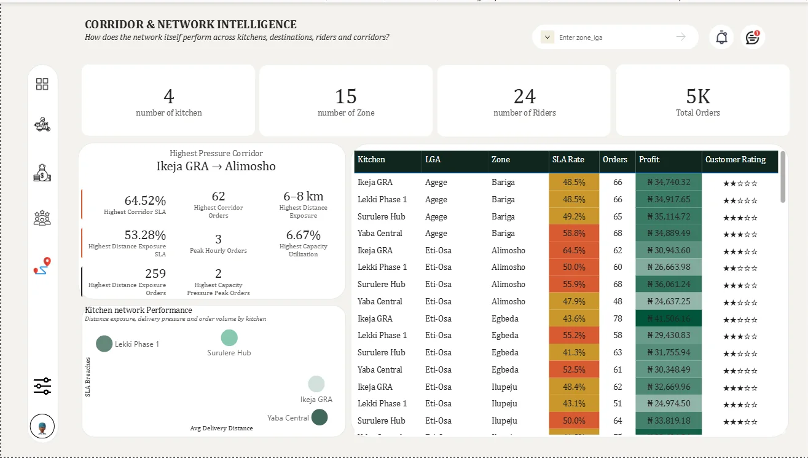

The problem the brief set
I built this for the DataDNA September 2026 dataset challenge. The Golden Wok scenario is fictional and the dataset is generated: 5,000 orders across 4 kitchens, 15 destination zones and 24 active riders, in Lagos, in naira, spanning 2023-01-01 to 2024-12-31. I say that everywhere on these pages, because the honest reading of any generated dataset is patterns within the data, not claims about a real business.
The brief put me in the role of an analyst investigating delivery radius and urban traffic friction, and it did something I appreciated: it did not just ask for charts, it made five specific claims about the data and expected me to check them. Rush-hour orders to outer zones would run past 90 minutes and lose money. Rain would push traffic friction up 1.8 times and add about 28 minutes. Orders beyond 8 km would be structurally unprofitable. Cold food would drive low ratings. And the Lekki kitchen serving Victoria Island and Ikoyi would be a loss-making corridor.
So my report has two jobs at once. One: answer the standing questions any delivery operator has, how are we performing, where is time lost, where is money made, how do customers feel, and where in the network should we look first. Two: test the brief's five claims and report honestly which ones survive contact with the data. I organized my five dashboard pages along one chain, operating conditions, delivery friction, SLA performance, profitability, customer experience, and then named corridors, so each page owns one link.
Testing the brief's five hypotheses
This is the table I would want to read first if I were judging this work: each claim from the brief, what I found when I tested it against all 5,000 orders, and my verdict. Two of the five hold in some form. Three do not, and saying so plainly matters more to me than agreeing with the brief.
| The brief claimed | What I found in the data | My verdict |
|---|---|---|
| Rush-hour orders to outer zones run past 90 minutes, triple the promise, and lose money (profit below -500) | Rush-hour breach rates run 47.3% to 50.8% by zone tier, slightly better than non-rush in two tiers. About 13% to 18% of orders miss their promise by more than double, but that share is flat across tiers. And not one of the 5,000 orders is loss-making at all. | Does not hold. Rush hour is not where the pressure is in this data. |
| Rain or Heavy Rain raises traffic friction 1.8x and adds about 28 minutes | The time effect is real: Heavy Rain runs +38.4 minutes against Sunny days, more than the brief's estimate. But the friction score barely moves, 1.02x to 1.05x. Weather shifts delivery time, not the recorded friction score. | Half holds. The delay effect is real and larger than claimed; the 1.8x friction effect is not. |
| Orders beyond 8 km are structurally unprofitable regardless of order value | Orders beyond 8 km average +₦498 profit, and they stay positive at every order-value level I cut. Zero loss-making orders exist anywhere in the file. What is true: delivery cost is roughly ₦6,000 whether the run is 2 km or 30 km, so cost per kilometre collapses from ₦5,445 on short runs to ₦272 on long ones. | Does not hold. Profit does not flip negative with distance; the interesting cost pattern is the opposite of what I expected. |
| Food temperature below 45°C for deliveries past 60 minutes, dragging ratings below 2.5 | Only 4.1% of rows are both cold and late, and cold orders rate 3.04 on average against 3.00 for warm ones. The field itself is implausible: temperatures read around 500°C with values up to 999.9, which is not food, that is an oven. | Does not hold, and the field is unusable. I excluded it from every conclusion. |
| The Lekki kitchen serving Victoria Island and Ikoyi records negative corridor profitability | No corridor anywhere is negative. Lekki's own corridors all run positive profit. The worst corridor by profit is Ikeja GRA to Ogudu at +₦432 per order, and the worst by service is Ikeja GRA to Alimosho at a 64.52% breach rate. | Does not hold as stated. The real pressure corridor is a service problem, not a profit problem, and it is not Lekki's. |
One more finding from the same exercise: the shipped data dictionary does not describe the shipped data. It promises promised times of 25 to 45 minutes and five weather values including Clear; the file has promises from 0 to 1,000 minutes and eight weather values with no Clear. I profiled the CSVs directly and worked from what is actually in them, and I flag this here because it is exactly the kind of thing that quietly corrupts an analysis if you trust the documentation over the data.
The short answer
With the brief's hypotheses settled, here is what the data does say. Half of all orders (49.9%) miss their promised delivery window, the average promise gap is -4.97 minutes, and the whole operation runs on a 0.65% profit margin: ₦380.56M of revenue returns just ₦2.49M of profit. The severity distribution is bimodal, roughly 2,499 orders arrive early while roughly 2,181 arrive more than 60 minutes late, with almost nothing in between, which points at promise calibration rather than rider speed. Pressure concentrates in specific corridors: Ikeja GRA to Alimosho breaches 64.52% of the time on 62 orders. And the one condition effect the data supports is weather: heavy rain adds about 38 minutes to delivery. My fix order is promises first, corridors second, weather third. Every number here comes off my own dashboard and my own profiling of the shipped files.

Numbers at a glance
Where they come from: the headline KPIs, the corridor figures and the zone breakdowns are read off my dashboard pages, and the row-level facts (severity counts, weather effects, distance economics) come from my own profile of the shipped CSV files, which I ran because the shipped dictionary did not match the data.
How to read each number
| Number | How I got it | How to read it |
|---|---|---|
| 49.9% SLA breach rate | Orders whose actual delivery time exceeded the promise, over all 5,000 orders | Half the network misses its promise. The severity split says most misses are extreme: 2,181 orders arrived more than 60 minutes late. |
| -4.97 minute promise gap | Average of actual minus promised delivery time | On average deliveries run almost on promise (500 vs 505 minutes). The average hides the two-tail story; the severity bands are where it lives. |
| 0.65% profit margin | ₦2.49M profit over ₦380.56M revenue | Almost no cushion. Delivery cost is 8.01% of order value, so small cost movements would flip zones between profit and loss. |
| Bimodal severity split | Each order banded by how far past the promise it landed: Early, On Time, three mild-late bands, Severe >60 min | 2,499 early against 2,181 severely late, and only 316 orders in the mild bands. The promise is mis-calibrated in both directions at once. |
| 53.28% breach at 6 to 8 km | The distance band with the highest breach rate, 259 orders | The band-level peak, but read with care: the 8 to 10 km band dips to 44.4% and 10+ km sits at 50.3%, so distance is not a clean gradient in this data. |
| 64.52% on the worst corridor | Ikeja GRA to Alimosho, 62 orders, ranked with a 20-order minimum built into my measure | One kitchen-to-zone pairing is the clearest single point of failure in the network. |
| +38.4 minutes in Heavy Rain | Heavy Rain average actual time minus Sunny average, all else free | The one condition effect the data supports, and it is bigger than the brief's own estimate. Worth a promise adjustment. |
What I found
The promises are broken in both directions, and that is the first thing to fix
Are we delivering within our promises?
My SLA page shows a 50.1% success rate, a -4.97 minute average promise gap and a 43.6% delay rate. On averages alone this operation looks nearly on time: promises average about 505 minutes and actuals about 500.
The severity distribution is what tells the truth. It is bimodal: 2,499 orders arrive early, 2,181 arrive more than 60 minutes late, and just 316 land in the three mild-late bands combined. An operation this split does not have a speed problem at the middle, it has a promise that is simultaneously too generous and too tight. The P90 sits at 899 minutes, which means the worst tenth of orders are walking home.
This is also where the brief's first hypothesis fails usefully: rush-hour orders breach at 47.3% to 50.8% depending on tier, no worse than the rest, so the breaches are not coming from when orders are placed. They come from how promises are set.
What it means. A 50% breach rate with a near-zero average gap is a promise-shape problem, not a speed problem.
Recalibrate promised times by distance band and weather condition before investing in speed.

Distance does not do what the brief expected, and the cost curve bends the other way
Where is delivery friction concentrated, and what does distance cost?
I banded every order by distance, and the honest headline is that distance is a weak signal here. Breach rates sit between 44.4% and 53.3% across all six bands: the 6 to 8 km band peaks at 53.28% on 259 orders, the 8 to 10 km band dips to 44.4%, and the 10+ km band, which carries 71.7% of all orders, sits right on the network average at 50.3%. There is no clean gradient, and I would not sell one.
The economics surprised me more. The brief expected orders beyond 8 km to be structurally unprofitable. They are not: zero loss-making orders exist in the entire file, and orders beyond 8 km average +₦498 profit whether the order value is ₦1,500 or ₦150,000. The reason is that delivery cost barely scales with distance, about ₦6,000 per order whether the run is 2 km or 30 km. That makes cost per kilometre collapse from ₦5,445 on the shortest runs to ₦272 past 10 km, so the expensive kilometres are the short ones, not the long ones.
The zone tiers tell the same flat story: breach rates of 48.9%, 50.3%, 50.3% and 49.6% across the four tiers, all within two points. Neither zone label nor distance band explains much on its own. What does move the needle is the specific kitchen-to-zone pairing, which is where my corridor finding comes from.
What it means. When a hypothesised driver does not survive the data, the remaining variation points somewhere else. Here it points at corridors and promises, not distance bands.
Do not draw an 8 km profit cliff that is not there. Treat distance bands as display buckets and act on corridors and promise calibration instead.
The margin math leaves no room for surprises
Where is the operation creating or consuming value?
₦380.56M of revenue returns ₦2.49M of profit. That is a 0.65% margin, and delivery cost alone is ₦30.50M, 8.01% of order value. My profitability page breaks that down by zone, and the spread is thin everywhere: Shomolu tops the table at about 0.7% against a network average of 0.65%, and the weakest zone sits at 0.62%. Nobody is printing money; the whole network is one cost shock away from loss.
The vehicle view adds texture. No vehicle type is dramatically worse overall, breach rates run 49.0% to 52.0% across the five types. But my exposure ranking, which crosses vehicle type with distance band, finds the concentrated pockets: Electric Motorcycle riders breach 66.7% of the time in the 6 to 8 km band, Bicycle riders 57.6% in the 8 to 10 km band, while Tricycle (Keke) riders carry the big long-haul volume, 451 orders past 10 km at 50.1%.
Because the margin is 0.65%, these are not statistical curiosities. A vehicle assignment rule that keeps the worst vehicle-band pairs out of the worst routes is one of the few levers that operates at the scale of the whole margin.
What it means. At a 0.65% margin, operational decisions are existential, and the levers that matter are the ones that shift cost or breach rates at network scale.
Treat vehicle-to-route assignment as a profitability decision, starting with the Electric Motorcycle and Bicycle exposure pockets.

Ratings barely move, and the brief's cold-food chain does not exist here
Is customer experience aligned with operational performance?
Overall experience health sits at 3.0 out of 5, which my dashboard flags as Watch, and low-rating exposure varies sharply by destination: Isolo at 41.09% and Lekki Phase 2 at 40.48% carry the most low-rating pressure, against Maryland at 32.05% at the other end.
But when I lined customer rating up against SLA severity, the line stayed flat: ratings sit between 2.89 and 3.27 across every severity level, and the On Time group actually reads lowest. The brief's proposed chain, late delivery causes cold food causes bad ratings, fails at both links in this data. Cold orders (below 45°C) rate 3.04 on average, slightly better than warm ones at 3.00.
And the food-temperature field itself had to go. It reads around 500°C with a maximum of 999.9, which is not a plausible food temperature in any world, so I excluded it from every conclusion rather than transform it silently. On this data I cannot claim that fixing delays will lift ratings, so I would sell SLA fixes on cost and retention risk, not on a promised rating lift.
What it means. A flat rating curve is as informative as a steep one. Here it says the customer-experience story lives in low-rating exposure by zone, not in the delay-to-rating link.
Fix zones with high low-rating exposure, and do not promise rating gains from speed alone.

One corridor is the clearest starting point, and my ranking measure refuses thin slices
Which parts of the network require attention first?
My network page ranks kitchen-to-zone corridors by SLA breach rate, and the ranking measure carries a 20-order minimum by construction, so a five-order corridor with a 100% breach rate cannot top the list. The current view puts Ikeja GRA to Alimosho first: 64.52% breach on 62 orders, about fifteen points above the network average. Two runners-up sit just behind it, Surulere Hub to Surulere at 61.4% on 70 orders and Ikeja GRA to Magodo at 61.3% on 62 orders.
The corridor lens beats the tier lens because tiers explain nothing (all within two points) while corridors swing fifteen. That is also why the brief's Lekki hypothesis misdirected: the model shows Lekki's corridors are profitable and mid-pack on service. The pressure lives at Ikeja GRA's long-haul pairings.
I pair the corridor finding with the capacity read: peak observed hourly demand is 3 orders against kitchen capacity, which puts highest utilisation at 6.67%. Capacity is not the constraint in this dataset. The constraint is what happens on the road, which keeps the focus on corridors and promises rather than kitchen throughput.
What it means. A prioritised list is only as good as its sample-size discipline. The corridor ranking earns trust because the threshold is inside the measure, not in my head.
Start the operational review at Ikeja GRA to Alimosho, and re-run the ranking whenever the underlying data changes.

What I would do next
Fix the promises before fixing the speed
High priority- Evidence
- A 50.1% success rate with a -4.97 minute average gap, a bimodal severity split (2,499 early, 2,181 severely late), and P90 at 899 minutes.
- What to do
- Recalibrate promised delivery times by distance band and weather condition so each promise reflects what that band actually delivers.
- What I expect
- Attacks both tails at once and costs nothing operationally.
Build a weather-adjusted promise
High priority- Evidence
- Heavy Rain adds +38.4 minutes against Sunny days, the one condition effect the data supports, and thunderstorms alone cover 1,057 orders.
- What to do
- Trigger a promise adjustment when Heavy Rain or Thunderstorm conditions apply, rather than holding riders to the clear-day promise.
- What I expect
- Removes predictable breaches from the count and protects riders held to impossible promises.
Review the Ikeja GRA to Alimosho corridor first
High priority- Evidence
- 64.52% SLA breach on 62 orders, the highest of any corridor past the 20-order threshold, with two more corridors just behind at 61%.
- What to do
- Run an operational review of that pairing: routing, rider allocation and promise time, then re-check the runner-up corridors.
- What I expect
- The clearest single point of failure, and the fastest measurable improvement.
Match vehicles to routes deliberately
Medium priority- Evidence
- Electric Motorcycle breaches 66.7% in the 6 to 8 km band and Bicycle 57.6% in the 8 to 10 km band, while Keke carries 451 long-haul orders at 50.1%.
- What to do
- Assign routes using the vehicle-band exposure ranking, not availability alone.
- What I expect
- Fewer breaches on the exact vehicle-band pairs where they concentrate.
Track low-rating zones separately from speed
Medium priority- Evidence
- Ratings sit flat at 2.9 to 3.3 across every SLA severity level, while low-rating exposure varies by zone from 32.05% to 41.09%.
- What to do
- Investigate what drives low ratings in Isolo and Lekki Phase 2 specifically, since delivery delay does not explain them on this data.
- What I expect
- Puts customer-experience effort where the exposure actually is.
Re-test the brief's hypotheses on a dataset that matches its dictionary
Low priority- Evidence
- Three of five hypotheses fail on this data, and the shipped dictionary does not describe the shipped file.
- What to do
- If the challenge re-runs with regenerated data, re-run my same model and measures; the thresholds and bands are the only constants to review.
- What I expect
- The whole framework is reusable; only the conclusions would change.
What this can't tell you
The dataset is generated for the DataDNA challenge and the Golden Wok scenario is fictional. Profitability conclusions describe this dataset, not a real business's economics.
Delivery times in this data are far longer than real-world food delivery: promises average about 505 minutes and P90 sits at 899. I read relative patterns between groups, not absolute times.
I excluded the food-temperature field from the analysis entirely: its values read around 500°C up to 999.9, which is implausible on its face, and I would rather report that than transform it silently.
My traffic-friction and distance bands are analytical buckets I defined for display. They are not official classifications and they do not establish causal thresholds. The distance band story is deliberately weak here and I say so rather than selling a gradient the data does not show.
Nothing here proves causation. Heavy Rain runs 38 minutes slower than Sunny, but weather is not randomly assigned in this data, so I treat it as a strong association worth acting on, not proof.
The shipped data dictionary does not match the shipped CSVs on several fields (promised times, weather values, zone tier labels). My numbers come from the CSVs; anyone reproducing this from the dictionary alone will get different answers.